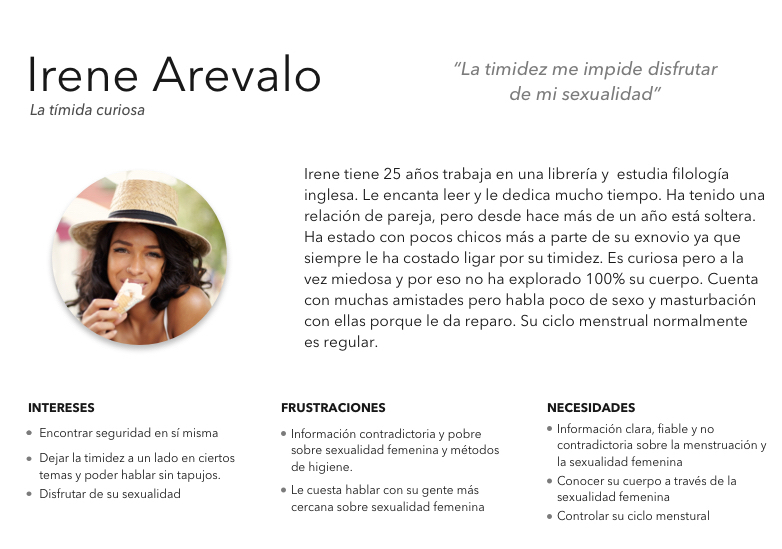
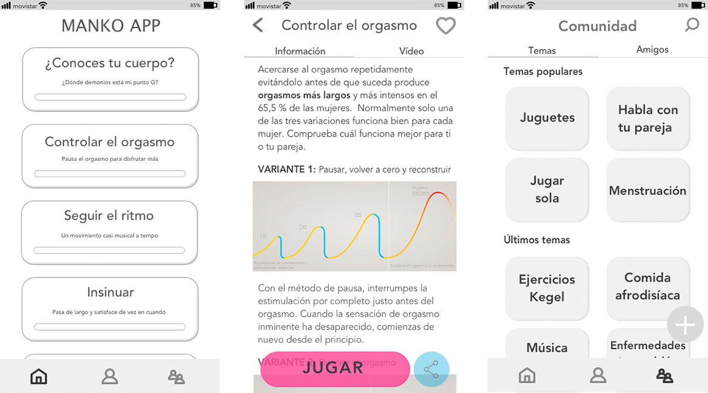
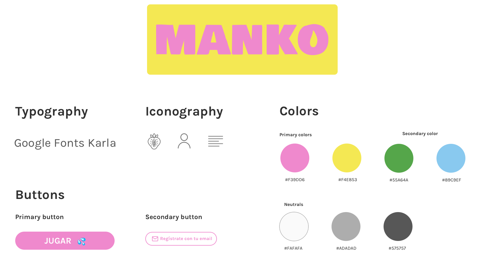

Project
Manko es un juego didáctico cuya idea es ayudar a las mujeres a disfrutar
plenamente de su sexualidad. El propósito de Manko es acabar con este tabú que hay sobre la sexualidad femenina.
Manko significa “coño” en japonés y es una palabra “prohibida” que apenas se utiliza debido a
que se considera una palabra sucia. Si alguna vez estás cerca de alguna persona japonesa di está palabra
y verás como se horroriza al instante.
El nombre del juego está inspirado en la manko-artista Rokudenashiko,
japonesa que hace arte con su vagina y que fue encarcelada injustamente por ello.
Podéis conocer su historia en su blog o en su libro Obscenidad.
Research
La primera aproximación al tema fue una encuesta en la que constaté que las mujeres tenían muy poca información sobre
sexualidad femenina. También realicé una serie de entrevistas que, junto con un benchmarking, confirmaron que era necesaria una aplicación que enseñara
a las mujeres (y a los hombres) sobre masturbación femenina.
A partir de las encuestas realicé
“El autoconocimiento es muy importante y para las mujeres es difícil porque no es una cosa que tengamos ahí, debemos abrir y mirar.”
“A veces no sé indicar a mi pareja sexual lo que me gusta porque realmente no lo he descubierto”
User Persona
A partir del Empathy map creado con los insights de las entrevistas y encuestas creé a Irene Árevalo, nuestra user persona.

Problem statement
“Irene necesita conocer su cuerpo para disfrutar de su sexualidad y evitar/detectar posibles enfermedades”
Features
Determinado el problema de mis usuarios y ayudándome de la metodología Lean UX, definí las features que iba a tener la aplicación.
Juego con información escrita y en video antes de jugar.
Consejos, donde puedes encontrar artículos sobre los diversos temas que conforman la sexualidad femenina, desde juguetes eróticos hasta menstruación.
Perfil para guardar las técnicas favoritas y para ver las insignias conseguidas en el juego.
Wireframes
Para testear la idea rápidamenterealicé los low fidelity wireframes con los que a partir del feedback de los usuarios creé los wireframes de mid fidelity
para testear los user flows.

UI Design
El lenguaje visual de la app debía representar principalmente:
frescura, empoderamiento de la mujer, sexualidad y diversión.

Moodboard

Style tile
Prototype